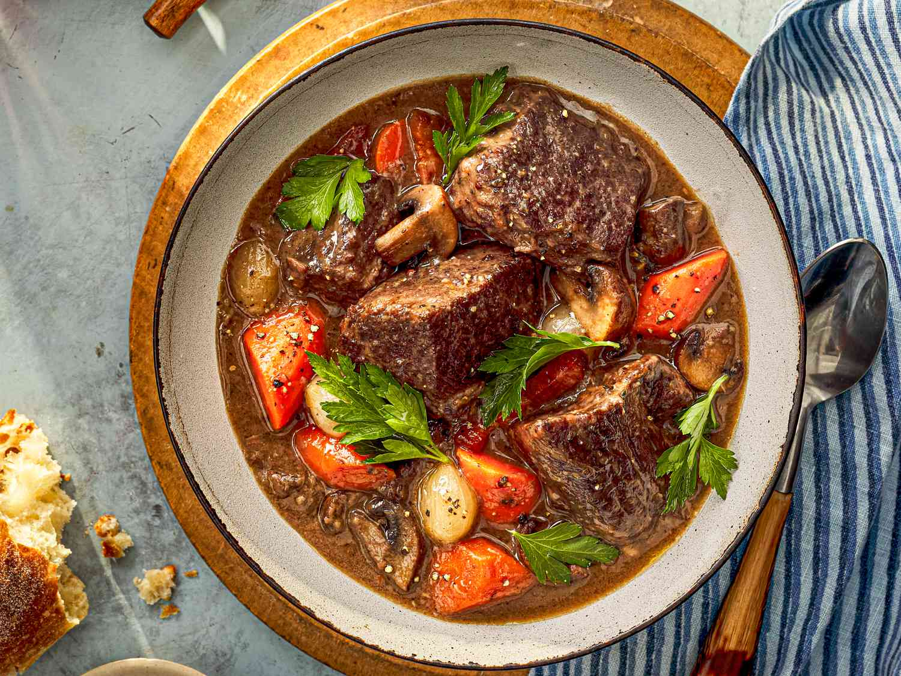
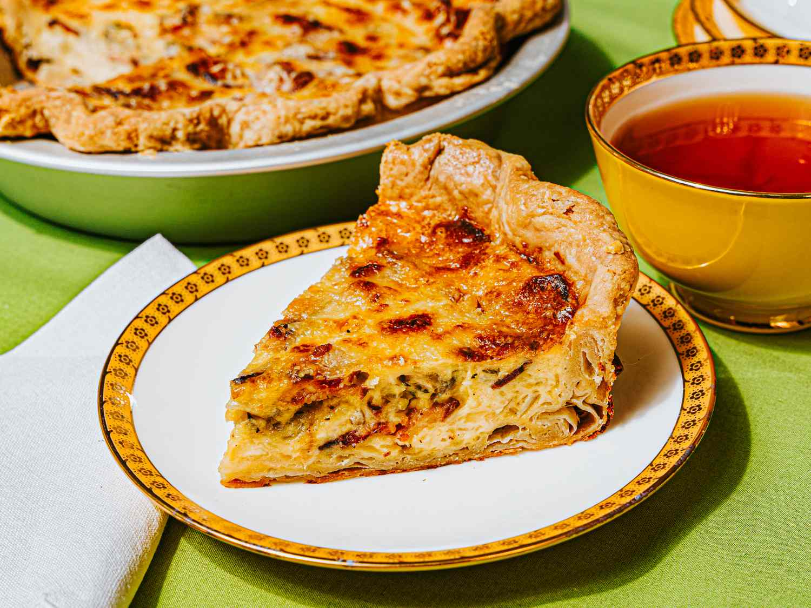

Coq au Vin
Chicken braised with red wine, mushrooms, onions, and bacon, creating a rich and flavorful dish.
Ingredients and Steps
Ingredients:
- 1 whole chicken (about 4 pounds), cut into pieces
- Salt and pepper to taste
- 2 tablespoons all-purpose flour
- 4 ounces bacon, diced
- 2 tablespoons olive oil
- 1 onion, finely chopped
- 2 carrots, sliced
- 2 cloves garlic, minced
- 2 cups red wine (such as Burgundy)
- 1 cup chicken broth
- 2 tablespoons tomato paste
- 1 bouquet garni (parsley, thyme, and bay leaf)
- 1/2 pound mushrooms, sliced
- 12 small pearl onions, peeled
- 2 tablespoons butter
- Fresh parsley for garnish
Steps:
- Season the chicken pieces with salt and pepper. Dredge them in flour, shaking off any excess.
- In a large Dutch oven or heavy-bottomed pot, cook the bacon over medium heat until crispy. Remove the bacon and set aside, leaving the rendered fat in the pot.
- Add the olive oil to the pot and heat. Brown the chicken pieces on all sides, then remove and set aside.
- Add the chopped onion, carrots, and garlic to the pot. Cook until the vegetables are softened, about 5 minutes.
- Pour in the red wine and chicken broth, stirring to combine. Add the tomato paste and bouquet garni.
- Return the chicken and bacon to the pot. Bring to a simmer, then cover and cook over low heat for about 1 1/2 hours, or until the chicken is tender.
- In a separate skillet, melt the butter and sauté the mushrooms and pearl onions until golden brown.
- Add the mushrooms and onions to the pot and cook for an additional 30 minutes.
- Remove the bouquet garni and season the sauce with salt and pepper to taste.
- Garnish with fresh parsley and serve hot.

Ratatouille
A vegetable stew made with eggplant, zucchini, bell peppers, tomatoes, and herbs.
Ingredients and Steps
Ingredients:
- 1 eggplant, diced
- 2 zucchinis, sliced
- 1 yellow bell pepper, diced
- 1 red bell pepper, diced
- 1 onion, chopped
- 4 cloves garlic, minced
- 4 large tomatoes, chopped
- 1/4 cup olive oil
- 1 teaspoon dried thyme
- 1 teaspoon dried oregano
- Salt and pepper to taste
- Fresh basil for garnish (optional)
Steps:
- Preheat the oven to 375°F (190°C).
- In a large skillet, heat the olive oil over medium heat. Add the chopped onion and garlic, and sauté until softened.
- Add the eggplant, zucchini, bell peppers, and tomatoes to the skillet. Cook for about 10 minutes, stirring occasionally.
- Season the vegetables with thyme, oregano, salt, and pepper. Stir to combine.
- Transfer the vegetable mixture to a baking dish and cover with aluminum foil.
- Bake in the preheated oven for about 30 minutes, until the vegetables are tender.
- Remove from the oven and garnish with fresh basil, if desired.
- Serve hot as a main dish or a side. Enjoy your delicious Ratatouille!

Bœuf Bourguignon
Beef stew braised in red wine with onions, carrots, mushrooms, and bacon.
Ingredients and Steps
Ingredients:
- 3 pounds beef chuck, cut into 2-inch cubes
- Salt and pepper to taste
- 2 tablespoons all-purpose flour
- 4 ounces bacon, diced
- 2 tablespoons olive oil
- 1 large onion, chopped
- 2 carrots, sliced
- 4 cloves garlic, minced
- 2 tablespoons tomato paste
- 3 cups red wine (such as Burgundy)
- 2 cups beef broth
- 1 bay leaf
- 1 teaspoon dried thyme
- 1/2 pound mushrooms, sliced
- 12 small pearl onions, peeled
- 2 tablespoons butter
- Fresh parsley for garnish
Steps:
- Season the beef cubes with salt and pepper. Dredge them in flour, shaking off any excess.
- In a large Dutch oven or heavy-bottomed pot, cook the bacon over medium heat until crispy. Remove the bacon and set aside, leaving the rendered fat in the pot.
- Add the olive oil to the pot and heat. Brown the beef cubes on all sides, then remove and set aside.
- Add the chopped onion, carrots, and garlic to the pot. Cook until the vegetables are softened, about 5 minutes.
- Stir in the tomato paste and cook for 1-2 minutes.
- Pour in the red wine and beef broth, stirring to combine. Add the bay leaf and thyme.
- Return the beef and bacon to the pot. Bring to a simmer, then cover and cook over low heat for about 2 1/2 to 3 hours, or until the beef is tender.
- In a separate skillet, melt the butter and sauté the mushrooms and pearl onions until golden brown.
- Add the mushrooms and onions to the pot and cook for an additional 30 minutes.
- Remove the bay leaf and season the sauce with salt and pepper to taste.
- Garnish with fresh parsley and serve hot.

Quiche Lorraine
Savory pie with a filling of eggs, cream, cheese, and bacon in a pastry crust.
Ingredients and Steps
Ingredients:
- 1 pie crust (store-bought or homemade)
- 6 slices bacon, cooked and crumbled
- 1 cup shredded Gruyère or Swiss cheese
- 3 large eggs
- 1 1/2 cups heavy cream
- 1/4 teaspoon salt
- 1/4 teaspoon black pepper
- 1/4 teaspoon ground nutmeg (optional)
- 1 tablespoon chopped fresh chives (optional)
Steps:
- Preheat the oven to 375°F (190°C).
- Roll out the pie crust and fit it into a 9-inch pie dish. Trim the edges and prick the bottom with a fork.
- Blind bake the pie crust by lining it with parchment paper and filling it with pie weights or dried beans. Bake for about 15 minutes, then remove the parchment paper and weights and bake for an additional 5 minutes. Let cool slightly.
- Sprinkle the cooked and crumbled bacon and shredded cheese evenly over the bottom of the pie crust.
- In a large bowl, whisk together the eggs, heavy cream, salt, pepper, and nutmeg (if using) until well combined.
- Pour the egg mixture over the bacon and cheese in the pie crust.
- Bake in the preheated oven for 30-35 minutes, or until the quiche is set and the top is lightly golden.
- Let the quiche cool slightly before slicing. Garnish with chopped chives if desired.
- Serve warm or at room temperature. Enjoy your delicious Quiche Lorraine!
Crème Brûlée
A creamy custard dessert with a caramelized sugar crust.
Ingredients and Steps
Ingredients:
- 2 cups heavy cream
- 1 vanilla bean or 1 teaspoon vanilla extract
- 5 large egg yolks
- 1/2 cup granulated sugar (plus extra for caramelizing)
- Pinch of salt
Steps:
- Preheat the oven to 325°F (160°C).
- If using a vanilla bean, split it lengthwise and scrape out the seeds. Add the seeds and pod to a saucepan with the heavy cream. Heat the cream over medium heat until it just begins to simmer, then remove from heat and let it infuse for 10 minutes. If using vanilla extract, add it to the cream after heating.
- In a mixing bowl, whisk together the egg yolks, granulated sugar, and a pinch of salt until well combined and slightly pale.
- Slowly pour the warm cream into the egg yolk mixture, whisking constantly to avoid curdling the eggs.
- Strain the mixture through a fine-mesh sieve into a large measuring cup or bowl to remove any solids or the vanilla bean pod.
- Divide the custard mixture evenly among 4 to 6 ramekins.
- Place the ramekins in a baking dish and carefully pour hot water into the dish until it reaches halfway up the sides of the ramekins.
- Bake in the preheated oven for 35-40 minutes, or until the custards are set but still slightly jiggly in the center.
- Remove the ramekins from the water bath and let them cool to room temperature, then refrigerate for at least 2 hours or overnight.
- Before serving, sprinkle a thin layer of granulated sugar over the top of each custard. Use a kitchen torch to caramelize the sugar until it forms a golden, crispy crust. If you don't have a torch, you can use the broiler in your oven, watching carefully to prevent burning.
- Let the caramelized sugar harden for a few minutes, then serve and enjoy your delicious Crème Brûlée!

Croissants
Flaky, buttery pastries, often enjoyed with coffee for breakfast.
Ingredients and Steps
Ingredients:
- 4 cups all-purpose flour
- 1/4 cup granulated sugar
- 2 1/4 teaspoons (1 packet) active dry yeast
- 1 1/2 teaspoons salt
- 1 cup warm milk
- 1/2 cup warm water
- 1 1/2 cups unsalted butter, cold
- 1 egg (for egg wash)
Steps:
- In a large mixing bowl, combine the flour, sugar, yeast, and salt. Mix well.
- Add the warm milk and water to the dry ingredients and mix until a dough forms.
- Knead the dough on a lightly floured surface for about 10 minutes until smooth and elastic. Cover with plastic wrap and let it rise in a warm place for about 1 hour, or until doubled in size.
- While the dough is rising, cut the cold butter into thin slices. Arrange the slices in a single layer between two sheets of plastic wrap, then use a rolling pin to flatten the butter into a rectangle about 1/4 inch thick. Refrigerate the butter until needed.
- Once the dough has risen, punch it down and roll it out into a large rectangle on a lightly floured surface.
- Place the flattened butter on one half of the dough, then fold the other half over the butter. Pinch the edges to seal the butter inside the dough.
- Roll the dough out into a large rectangle again, then fold it into thirds like a letter. Wrap the dough in plastic wrap and refrigerate for 30 minutes.
- Repeat the rolling and folding process two more times, refrigerating for 30 minutes between each fold.
- After the final fold, roll the dough out into a large rectangle about 1/4 inch thick. Cut the dough into triangles.
- Roll each triangle up from the wide end to the point, forming a crescent shape. Place the croissants on a baking sheet lined with parchment paper.
- Cover the croissants with a clean kitchen towel and let them rise in a warm place for about 1 hour, or until doubled in size.
- Preheat the oven to 400°F (200°C). Brush the croissants with a beaten egg for a shiny, golden finish.
- Bake the croissants for 15-20 minutes, or until golden brown and flaky.
- Let cool slightly before serving. Enjoy your delicious homemade croissants!